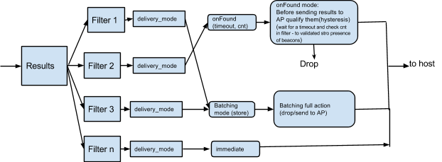

The Host Controller Interface (HCI) is used for interacting with a Bluetooth controller.
This document provides a list of Bluetooth (BT) and Bluetooth Low Energy (BLE) HCI requirements. The aim is for Host BT stack vendors and BT controller vendors to conform to these platform requirements in order to use the feature set described below.
This document refers to the Bluetooth Core 5.1 Specification as the "spec." The Bluetooth Core 5.1 Specification is available on the Bluetooth SIG website along with other adopted documents.
General design overview
Chip capabilities and configuration
As an open platform, Android has a matrix of software releases, OEMs, vendors, and platform and chip capabilities.
To manage the varying landscape and to manage migrations, a design philosophy of allowing BT controllers to expose their capabilities (beyond the standard Bluetooth Core 5.1 Specification) is described in this document. The host BT stack can then use these capabilities to determine which features to enable.
Supporting open standards
One goal of Android is to support open standards after ratification in a Bluetooth specification. If a feature described below becomes available in standard HCI methods in a future Bluetooth specification, we will lean towards making that approach the default.
Vendor-specific capabilities
Vendor-specific command:
LE_Get_Vendor_Capabilities_Command
OpCode Command Field (OCF): 0x153
| Command parameter | Size | Purpose |
|---|---|---|
| NA | Empty Command parameter list |
A Command Complete event will be generated for this command.
| Return parameter | Size | Purpose |
|---|---|---|
Status |
1 octet | Command Complete status |
max_advt_instances(Deprecated) |
1 octet | Number of advertisement instances supported. This parameter is deprecated in the Google feature spec v0.98 and higher in favor of the LE Extended Advertising available in the BT spec version 5.0 and higher. |
offloaded_resolution_of_private-address(Deprecated) |
1 octet | BT chip capability of RPA. If supported by a chip, it needs enablement by the host. 0 = Not capable 1 = Capable This parameter is deprecated in the Google feature spec v0.98 and higher in favor of the Privacy feature available in the BT spec version 4.2 and higher. |
total_scan_results_storage |
2 octets | Storage for scan results in bytes |
max_irk_list_sz |
1 octet | Number of IRK entries supported in the firmware |
filtering_support |
1 octet | Support for filtering in the controller 0 = Not supported 1 = Supported |
max_filter |
1 octet | Number of filters supported |
activity_energy_info_support |
1 octet | Supports reporting of activity and energy information 0 = Not capable 1 = Capable |
version_supported |
2 octets | Specifies the version of the Google feature spec supported byte[0] = Major number byte[1] = Minor number v0.98 byte[0] = 0x00 byte[1] = 0x62 |
total_num_of_advt_tracked |
2 octets | Total number of advertisers tracked for
OnLost/OnFound purposes |
extended_scan_support |
1 octet | Supports extended scan window and interval |
debug_logging_supported |
1 octet | Supports logging of binary debug information from controller |
LE_address_generation_offloading_support(Deprecated) |
1 octet | 0 = Not supported 1 = Supported This parameter is deprecated in the Google feature spec v0.98 and higher in favor of the Privacy feature available in the BT spec version 4.2 and higher. |
| A2DP_source_offload_capability_mask | 4 Octets | Bit masks for codec types supported Bit 0 - SBC Bit 1 - AAC Bit 2 - APTX Bit 3 - APTX HD Bit 4 - LDAC Bit 5-31 are reserved |
| bluetooth_quality_report_support | 1 octet | Supports reporting of Bluetooth Quality events 0 = Not capable 1 = Capable |
Batching of scan results
A design goal is to enhance how the Bluetooth LE Scan Response event notifications are delivered to the host, in order to save power in the host.
By reducing how often the controller notifies the host application
processor to scan results, the host application processor can stay in
idle/sleep longer. This reduces power consumption in the host. The
return parameter total_scan_results_storage of
LE_Get_Vendor_Capabilities_Command indicates the chip
capability for storage of scan results.
This feature focuses on the management and configuration of the LE Scan Results storage facility in the Bluetooth controller. The storage is used to temporarily batch advertisement data and scan data and metadata that are received by the controller for later delivery to the host.
Firmware shall support two types of batching, which can be engaged simultaneously:
- Truncated. Contains the following information elements: {MAC, TX Power, RSSI, Timestamp}
- Full. Contains the following information elements: {MAC, TX Power, RSSI, Timestamp, Adv Data, Scan Response}
LE_Batch_Scan_Command
OCF: 0x156
| Command parameter | Size | Purpose |
|---|---|---|
Batch_Scan_opcode |
1 octet | 0x1 - Enable customer-specific feature 0x2 - Set Batch Scan Storage parameters 0x3 - Set Batch Scan parameters 0x4 - Read Batch Scan Result parameters |
A Command Complete event will be generated for this command. Enabling the customer-specific feature does not start the scan.
| Return parameter | Size | Purpose |
|---|---|---|
Status |
1 octet | Command Complete status |
Batch_Scan_opcode |
1 octet | 0x1 - Enable customer-specific feature 0x2 - Set Batch Scan Storage parameters 0x3 - Set Batch Scan parameters 0x4 - Read Batch Scan Result parameters |
LE_Batch_Scan_Command: Enable Customer Specific feature
Sub OCF: 0x01
| Sub-command parameter | Size | Purpose |
|---|---|---|
enable_customer_specific_feature_set |
1 octet | 0x01 - Enable Batch Scan feature 0x00 - Disable Batch Scan feature |
A Command Complete event will be generated for this command.
| Return parameter | Size | Purpose |
|---|---|---|
Status |
1 octet | Command Complete status |
Batch_Scan_opcode |
1 octet | 0x1 - Enable customer-specific feature 0x2 - Set Batch Scan Storage parameters 0x3 - Set Batch Scan parameters 0x4 - Read Batch Scan Result parameters |
LE_Batch_Scan_Command: Set Batch Scan Storage Param subcommand
Sub OCF: 0x02
| Sub-command parameter | Size | Purpose |
|---|---|---|
Batch_Scan_Full_Max |
1 octet | Max storage space (in %) allocated to full style [Range: 0-100] |
Batch_Scan_Truncated_Max |
1 octet | Max storage space (in %) allocated to truncated style [Range: 0-100] |
Batch_Scan_Notify_Threshold |
1 octet | Setup notification level (in %) for individual storage pool
[Range: 0-100] Setting to 0 will disable notification. Vendor-specific HCI event is generated (Storage threshold breach subevent) |
A Command Complete event will be generated for this command.
| Return parameter | Size | Purpose |
|---|---|---|
Status |
1 octet | Command Complete status |
Batch_scan_opcode |
1 octet | 0x02 [Set Batch Scan parameters] |
LE_Batch_Scan_Command: Set Batch Scan Param subcommand
Sub OCF: 0x03
| Sub-command parameter | Size | Purpose |
|---|---|---|
Batch_Scan_Mode |
1 octet | 0x00 – Batch scan is disabled 0x01 – Truncated mode is enabled 0x02 – Full mode is enabled 0x03 – Truncated and Full mode are enabled |
Duty_cycle_scan_window |
4 octets | Batch Scan scan time (# of slot) |
Duty_cyle_scan_interval |
4 octets | Batch Scan interval period (# of slot) |
own_address_type |
1 octet | 0x00 - Public device address 0x01 - Random device address |
Batch_scan_Discard_Rule |
1 octet | 0 - Discard oldest advertisement 1 - Discard advertisement with weakest RSSI |
This sub-command will start batch scanning, if enabled. In
Truncated scanning, results are stored in truncated form where the
unique key for Truncated style = {BD_ADDR,
scan_interval}. This means only one BD_ADDR will be
recorded for each scan interval. The record to keep for Truncated
mode is the following: {BD_ADDR, Tx Power, RSSI,
Timestamp}
When Full mode is enabled, active scanning will be used and Scan
Responses will be recorded. The Full style unique key = {MAC, Ad
packet}, irrespective of scan interval. The record to keep for Full
mode is {BD_ADDR, Tx Power, RSSI, Timestamp, Ad
packet, Scan Response}. In Full style, the same AD packet, when
seen multiple times across different scan intervals, is recorded
only once. However, in Truncated mode, it is the visibility of
BA_ADDR across different scan intervals that is of
interest (once per scan interval). The RSSI is the averaged value
of all duplicates of a unique advertisement within a scan interval.
A Command Complete event will be generated for this command.
| Return parameter | Size | Purpose |
|---|---|---|
Status |
1 octet | Command Complete status |
Batch_scan_opcode |
1 octet | 0x03 [Set Batch Scan Parameters] |
LE_Batch_Scan_Command: Read Batch Scan Results sub-command
Sub OCF: 0x04
| Sub-command parameter | Size | Purpose |
|---|---|---|
Batch_Scan_Data_read |
1 octet | 0x01 – Truncated mode data 0x02 – Full mode data |
A Command Complete event will be generated for this command. When the host issues this command, all the results in the controller may not fit in one Command Complete event. The host will iterate issuing this command until the corresponding results in the Command Complete event indicate 0 in the number of records, which indicates the controller has no more records to communicate to the host. Each Command Complete event could contain multiple records of only one type of data (Full or Truncated).
Controller and host time references are not synchronized. The
unit of the timestamp is 50ms. The value of the timestamp is
based off when the Read_Batch_Scan_Results_Sub_cmd
is given by the host. If a command arrival time is
T_c in the firmware, then the actual time the
timestamp was taken in the firmware is T_fw. The
reporting time will be: (T_c - T_fw).
T_c and T_fw are in the firmware time
domain. This lets the host compute how long ago the event
happened.
| Return parameter | Size | Purpose |
|---|---|---|
Status |
1 octet | Command Complete status |
Batch_scan_opcode |
1 octet | 0x03 [Set Batch Scan parameters] |
Batch_Scan_data_read |
1 octet | Identifies the format (Truncated or Full) |
num_of_records |
1 octet | Number of records of Batch_Scan_data_read |
format_of_data |
Variable | Truncated
Mode: Address[0]: 6 octets Address_Type[0]: 1 octet Tx_Pwr[0]: 1 octet RSSI[0] : 1 octet Timestamp[0]: 2 octets [multiple records ( num_of_records)
with above format]Full Mode: Address[0]: 6 octets Address_Type[0]: 1 octet Tx_Pwr[0]: 1 octet RSSI[0]: 1 octet Timestamp[0]: 2 octets Adv packet_len[0]: 1 octet Adv_packet[0]: Adv_packet_len octets Scan_data_resp_len[0]: 1 octet Scan_data_resp[0]: Scan_data_resp octets[multiple records with above format ( num_of_records)] |
Advertising Packet Content Filter
Use this to enable/disable/setup the Advertising Packet Content Filter (APCF) in the controller.
LE_APCF_Command
OCF: 0x157
| Command parameter | Size | Purpose |
|---|---|---|
APCF_opcode |
1 octet | 0x00 - APCF Enable 0x01 - APCF Set Filtering parameters 0x02 - APCF Broadcaster Address 0x03 - APCF Service UUID 0x04 - APCF Service Solicitation UUID 0x05 - APCF Local Name 0x06 - APCF Manufacturer Data 0x07 - APCF Service Data |
A Command Complete event will be generated for this command.
| Return parameter | Size | Purpose |
|---|---|---|
Status |
1 octet | Return status |
APCF_opcode |
1 octet | 0x00 - APCF Enable 0x01 - APCF Set Filtering parameters 0x02 - APCF Broadcaster Address 0x03 - APCF Service UUID 0x04 - APCF Service Solicitation UUID 0x05 - APCF Local Name 0x06 - APCF Manufacturer Data 0x07 - APCF Service Data |
LE_APCF_Command: Enable_sub_cmd
Sub OCF: 0x00
| Sub-command parameter | Size | Purpose |
|---|---|---|
APCF_enable |
1 octet | 0x01 - Enable APCF feature 0x00 - Disable APCF feature |
A Command Complete event will be generated for this command.
| Return parameter | Size | Purpose |
|---|---|---|
Status |
1 octet | Command Complete status |
APCF_opcode |
1 octet | 0x0 - APCF Enable |
APCF_Enable |
1 octet | Enable/disable is set via APCF_enable |
LE_APCF_Command: set_filtering_parameters_sub_cmd
This subcommand is used to add or delete a filter specification or clear a filter list for on-chip filtering.
Sub OCF: 0x01
| Sub-command parameter | Size | Purpose |
|---|---|---|
APCF_Action |
1 octet | 0x00 - Add 0x01 - Delete 0x02 - Clear Delete will clear the specific filter along with associated feature entries in other tables. Clear will clear all the filters and associated entries in other tables. |
APCF_Filter_Index |
1 octet | Filter index (0, max_filter-1) |
APCF_Feature_Selection |
2 octets | Bit masks for the selected features: Bit 0: Set to enable Broadcast Address filter Bit 1: Set to enable Service Data Change filter Bit 2: Set to enable Service UUID check Bit 3: Set to enable Service Solicitation UUID check Bit 4: Set to enable Local Name check Bit 5: Set to enable Manufacturer Data Check Bit 6: Set to enable Service Data Check |
APCF_List_Logic_Type |
2 octets | Logic operation for each feature selection (per-bit
position) specified in APCF_Feature_Selection.
Valid only when a feature is enabled. Bit position value: 0: OR 1: AND If "AND" logic is selected, an ADV packet will pass the filter only if it contains ALL of the entries in the list. If "OR" logic is selected, an ADV packet will pass the filter if it contains any of the entries in the list. |
APCF_Filter_Logic_Type |
1 octet | 0x00: OR 0x01: AND Note: The logic type is N/A for the first three fields of APCF_Feature_Selection, which is always "AND"
logic. They are only applicable for (Bit 3 - Bit 6)
four fields of APCF_Feature_Selection. |
rssi_high_thresh |
1 octet | [in dBm] The advertiser is considered seen only if the signal is higher than the RSSI high threshold. Otherwise, the firmware must behave as if it never saw it. |
delivery_mode |
1 octet | 0x00 - immediate0x01 - on_found0x02 - batched |
onfound_timeout |
2 octets | Valid only if delivery_mode is
on_found.[in milliseconds] Time for firmware to linger and collect additional advertisements before reporting. |
onfound_timeout_cnt |
1 octet | Valid only if delivery_mode is
on_found.[count] If an advertisement in onFound lingers in
firmware for the onfound_timeout duration,
it will collect a few advertisements and the count is checked.
If the count exceeds onfound_timeout_cnt,
it's reported OnFound
immediately thereafter. |
rssi_low_thresh |
1 octet | Valid only if delivery_mode
is on_found.[in dBm] The advertiser packet is considered as not seen if the RSSI of the received packet is not above the RSSI low threshold. |
onlost_timeout |
2 octets | Valid only if delivery_mode is
on_found.[in milliseconds] If an advertisement, after being found, is not seen contiguously for the lost_timeout period,
it will immediately be reported lost. |
num_of_tracking_entries |
2 octets | Valid only if delivery_mode is
on_found.[count] Total number of advertisers to track per filter. |
RSSI values must use 2's complement to represent negative values.
Host shall be able to configure multiple filters with
APCF_Application_Address_type set to 0x02 (for all
broadcaster addresses) to manage various filter combinations.
Filtering, batching and reporting are inter-related concepts.
Every advertisement and related scan response will have to go
through all the filters, one after the other. Thus, resulting
actions (delivery_mode) are closely tied to filtering.
The delivery modes are the following:
report_immediately, batch, and
onFound. The OnLost value is related to
OnFound in the sense that it will come after
OnFound when lost.
This processing flow depicts the conceptual model:
When an advertisement (or scan response) frame is received, it is applied to all the filters in serial order. It's possible that an advertisement can cause immediate reporting based on one filter and batching of the same due to a different filter action.
RSSI level thresholds (high and low) give the ability to control when the frame is visible for filter processing, even when a valid packet is received by the controller. In case of delivery mode being set to immediate or batched, the RSSI of a frame is considered for further controller processing. Different apps need different reporting and batching behavior. This allows multiple apps to have direct reporting and/or batching of results in firmware, concurrently. An example is a case when a batch scan is active from one app and later a regular LE scan is issued by another app. Before a batch scan is issued, the framework/app sets appropriate filters. Later, when the second app issues a regular scan, previous batching continues. However, due to the regular scan, it is akin to conceptually adding a null filter (along with all the existing filters) along with the LE scan command. The LE scan command parameters take precedence when active. When the regular LE scan is disabled, the controller will revert back to a previous batch scan, if it existed.
The OnFound delivery mode is based on configured
filters. A combination that triggers a filter's action to succeed
is considered the entity to track for onLost. The
corresponding event is the LE Advt tracking subevent.
The OnFound/OnLost transition for a filter (if
enabled) will look like the following:
A Command Complete event will be generated for this command.
| Return parameter | Size | Purpose |
|---|---|---|
Status |
1 octet | Command Complete status |
APCF_opcode |
1 octet | 0x02 - APCF Set Filtering Parameters |
APCF_Action |
1 octet | Echo back command's APCF_Action |
APCF_AvailableSpaces |
1 octet | Number of available entries in the filters table |
LE_APCF_Command: broadcast_address_sub_cmd
This subcommand is used to add or delete an advertiser address or to clear the advertiser address list for on-chip filtering.
Sub OCF: 0x02
| Sub-command parameter | Size | Purpose |
|---|---|---|
APCF_Action |
1 octet | 0x00 - Add 0x01 - Delete 0x02 - Clear Delete will delete the specified broadcaster address in the specified filter. Clear will clear all the broadcaster addresses in the specified filter. |
APCF_Filter_Index |
1 octet | Filter index (0, max_filter-1) |
APCF_Broadcaster_Address |
6 octet | 6-byte device address to add to or delete from the broadcaster address list |
APCF_Application_Address_type |
1 octet | 0x00: Public 0x01: Random 0x02: NA (addresses type not applicable) |
A Command Complete event will be generated for this command.
| Return parameter | Size | Purpose |
|---|---|---|
Status |
1 octet | Command Complete status |
APCF_opcode |
1 octet | 0x02 - APCF Broadcaster Address |
APCF_Action |
1 octet | Echo back command's APCF_Action |
APCF_AvailableSpaces |
1 octet | Number of free entries still available in the Broadcast Address table |
LE_APCF_Command: service_uuid_sub_cmd
This subcommand is used to add or delete a service UUID or to clear a service UUID list for on-chip filtering.
Sub OCF: 0x03
| Sub-command parameter | Size | Purpose |
|---|---|---|
APCF_Action |
1 octet | 0x00 - Add 0x01 - Delete 0x02 - Clear Delete will delete the specified service UUID address in the specified filter. Clear will clear all the service UUIDs in the specified filter. |
APCF_Filter_Index |
1 octet | Filter index (0, max_filter-1) |
APCF_UUID |
2,4,16 octet | The Service UUID (16-bit, 32-bit, or 128-bit) for adding to, or deleting from, the list. |
APCF_UUID_MASK |
2,4,16 octet | The Service UUID Mask (16-bit, 32-bit, or 128-bit) to add
to the list. It should have the same length as
APCF_UUID. |
A Command Complete event will be generated for this command.
| Return parameter | Size | Purpose |
|---|---|---|
Status |
1 octet | Command Complete status |
APCF_opcode |
1 octet | 0x03 - APCF Service UUID |
APCF_Action |
1 octet | Echo back command's APCF_Action |
APCF_AvailableSpaces |
1 octet | Number of free entries still available in the Service UUID table |
LE_APCF_Command: solicitation_uuid_sub_cmd
This subcommand is used to add or delete a solicitation UUID or to clear a solicitation UUID list for on-chip filtering.
Sub OCF: 0x04
| Sub-command parameter | Size | Purpose |
|---|---|---|
APCF_Action |
1 octet | 0x00 - Add 0x01 - Delete 0x02 - Clear Delete will delete the solicitation UUID address in the specified filter. Clear will clear all the solicitation UUIDs in the specified filter. |
APCF_Filter_Index |
1 octet | Filter index (0, max_filter-1) |
APCF_UUID |
2,4,16 octet | The Solicitation UUID (16-bit, 32-bit, or 128-bit) to add to or delete from the list. |
APCF_UUID_MASK |
2,4,16 octet | The Solicitation UUID Mask (16-bit, 32-bit,
or 128-bit) to add to the list. It should have the same
length as the APCF_UUID. |
A Command Complete event will be generated for this command.
| Return parameter | Size | Purpose |
|---|---|---|
Status |
1 octet | Command Complete status |
APCF_opcode |
1 octet | 0x04 - APCF Solicitation UUID |
APCF_Action |
1 octet | Echo back command's APCF_Action |
APCF_AvailableSpaces |
1 octet | Number of free entries still available in the Solicitation UUID table |
LE_APCF_Command: local_name_sub_cmd
This sub-command is used to add or delete a local name string or to clear the local name string list for on-chip filtering.
Sub OCF: 0x05
| Sub-command parameter | Size | Purpose |
|---|---|---|
APCF_Action |
1 octet | 0x00 - Add 0x01 - Delete 0x02 - Clear Delete will delete the specified local name string in the specified filter. Clear will clear all the local name strings in the specified filter. |
APCF_Filter_Index |
1 octet | Filter index (0, max_filter-1) |
APCF_LocName_Mandata_or_SerData |
Variable size | A character string for local name. Notes:
|
A Command Complete event will be generated for this command.
| Return parameter | Size | Purpose |
|---|---|---|
Status |
1 octet | Command Complete status |
APCF_opcode |
1 octet | 0x05 - APCF Local Name |
APCF_Action |
1 octet | Echo back command's APCF_Action |
APCF_AvailableSpaces |
1 octet | Number of free entries still available in the Local name table |
LE_APCF_Command: manf_data_sub_cmd
This subcommand is used to add or delete a manufacturer data string or to clear the manufacturer data string list for on-chip filtering.
Sub OCF: 0x06
| Sub-command parameter | Size | Purpose |
|---|---|---|
APCF_Action |
1 octet | 0x00 - Add 0x01 - Delete 0x02 - Clear Delete will delete the specified manufacturer data string in the specified filter. Clear will clear all the manufacturer data strings in the specified filter. |
APCF_Filter_Index |
1 octet | Filter Index (0, max_filter-1) |
APCF_LocName_Mandata_or_SerData |
Variable size | A character string for manufacturer data. Notes:
|
APCF_ManData_Mask |
Variable size | The manufacture data mask to add to the list. It should
have the same length as
APCF_LocName_or_ManData_or_SerData. |
A Command Complete event will be generated for this command.
| Return parameter | Size | Purpose |
|---|---|---|
Status |
1 octet | Command Complete status |
APCF_opcode |
1 octet | 0x06 - APCF Manufacturer Data |
APCF_Action |
1 octet | Echo back command's APCF_Action |
APCF_AvailableSpaces |
1 octet | Number of free entries still available in the Manufacturer Data table |
LE_APCF_Command: service_data_sub_cmd
This subcommand is used to add or delete a service data string or to clear the service data string list for on-chip filtering.
Sub OCF: 0x07
| Sub-command parameter | Size | Purpose |
|---|---|---|
APCF_Action |
1 octet | 0x00 - Add 0x01 - Delete 0x02 - Clear Delete will delete the specified service data string in the specified filter. Clear will clear all the service data strings in the specified filter. |
APCF_Filter_Index |
1 octet | Filter Index (0, max_filter-1) |
APCF_LocName_Mandata_or_SerData |
Variable size | A character string for service data. Notes:
|
APCF_LocName_Mandata_or_SerData_Mask |
Variable size | The service data mask to add to the list. It should have
the same length as
APCF_LocName_or_ManData_or_SerData. |
A Command Complete event will be generated for this command.
| Return parameter | Size | Purpose |
|---|---|---|
Status |
1 octet | Command Complete status |
APCF_opcode |
1 octet | 0x07 - APCF Service Data |
APCF_Action |
1 octet | Echo back command's APCF_Action |
APCF_AvailableSpaces |
1 octet | Number of free entries still available for Service Data table |
Controller activity and energy information command
The objective of this information is for higher host system functions to analyze the total activities of all components, including the BT controller and its macro state, in conjunction with what is happening in the apps and framework. To do this, the following information is required from the BT stack and the controller:
- BT stack: Reporting the current macro-operational state of the controller
- Firmware: Reporting aggregate activity and energy information
BT host stack macro states, as determined at the user level:
- Idle: [page scan, LE advt, inquiry scan]
- Scan: [paging/inquiry/trying to connect]
- Active: [ACL link on, SCO link ongoing, sniff mode]
The activities that the controller keeps track of over its life are Tx time, Rx time, idle time, and total energy consumed. They are cleared when read from the host.
LE_Get_Controller_Activity_Energy_Info
This is a vendor-specific command.
OCF: 0x159
| Sub-command parameter | Size | Purpose |
|---|---|---|
| NA | Empty command params |
A Command Complete event will be generated for this command.
| Return parameter | Size | Purpose |
|---|---|---|
Status |
1 octet | Command Complete status |
total_tx_time_ms |
4 octets | Total time performing Tx |
total_rx_time_ms |
4 octets | Total time performing Rx |
total_idle_time_ms |
4 octets | Total time in idle (non-sleep low power states) |
total_energy_used |
4 octets | Total energy used [product of current (mA), voltage (V) and time (ms)] |
LE extended set scan parameters command
This command can be used to enable a larger scan window and interval in the controller. Per the BT Core 5.1 Specification, a scan window and interval have an upper bound limit of 10.24 seconds, which hampers applications' longer scan intervals beyond 10.24 seconds.
Base reference: BT Core 5.1 Specification, page 1331 (LE Set Scan Parameters Command)
OCF: 0x15A
| Command Parameter | Size | Purpose |
|---|---|---|
LE_Ex_Scan_Type |
1 octet | 0x00 - Passive scanning. No SCAN_REQ packets shall
be sent (default).0x01 - Active scanning. SCAN_REQ packets may be sent. |
LE_Ex_Scan_Interval |
4 octets | Defined as the time interval from when the Controller started
its last LE scan until it began the subsequent LE scan. Range: 0x0004 to 0x00FFFFFF Default: 0x0010 (10 ms) Time = N * 0.625 ms Time range: 2.5 ms to 10442.25 seconds |
LE_Ex_Scan_Window |
4 octets | The duration of the LE scan. LE_Scan_Window
shall be less than or equal to LE_Scan_Interval.
Range: 0x0004 to 0xFFFF Default: 0x0010 (10 ms) Time = N * 0.625 ms Time Range: 2.5 ms to 40.95 seconds |
Own_Address_Type |
1 octet | 0x00 - Public Device Address (default) 0x01 - Random Device Address |
LE_Ex_Scan_Filter_Policy |
0x00 - Accept all advertisement packets (default).
Directed advertising packets which are not addressed for this
device shall be ignored. 0x01 - Ignore advertisement packets from devices not in the White List Only list. Directed advertising packets which are not addressed for this device shall be ignored. |
A Command Complete event will be generated for this command.
| Return parameter | Size | Purpose |
|---|---|---|
Status |
1 octet | Command Complete status |
Get controller debug info command
The objective of this information element is to acquire controller debug information by a host, in binary form, for post-processing and analysis. This helps debug on-field issues and provides engineers with a toolkit to log information for analysis. A Controller can provide the information when requested by a host via the event (Controller Debug Info sub-event) or autonomously when desired by the controller. Example uses could be to report firmware state information, crash dump information, logging information, etc.
OCF: 0x15B
| Command parameter | Size | Purpose |
|---|---|---|
| N/A | Empty command parameter list |
A Command Complete event will be generated for this command.
| Return parameter | Size | Purpose |
|---|---|---|
| Status | 1 octet | Command Complete status |
A2DP Hardware Offload Support
The A2DP Offload feature supports the offload of the A2DP audio encoding process to an audio processor attached to the BT Controller. The encoded audio data stream passes directly from the Audio processor to the BT Controller without the BT host’s involvement. The BT Host is still responsible for the configuration and control of the A2DP session.
OCF: 0x15D
Start A2DP Offload
Sub OCF: 0x01
Use this command both to configure the A2DP Offload process and to start the A2DP stream.
| Command parameter | Size | Purpose |
|---|---|---|
| Codec | 4 octets | Specifies Codec type 0x01 - SBC 0x02 - AAC 0x04 - APTX 0x08 - APTX HD 0x10 - LDAC |
| Max_Latency | 2 octets | Max Latency Allowed (in ms). A value of zero disables flush. |
| SCMS-T_Enable | 2 octets | Octet 0: Flag that enables addition of SCMS-T header.
Octet 1: Value for the SCMS-T header, when it’s enabled. |
| Sampling_Frequency | 4 octets | 0x01 - 44100 Hz 0x02 - 48000 Hz 0x04 - 88200 Hz 0x08 - 96000 Hz |
| Bits_Per_Sample | 1 octet | 0x01 - 16 bits per sample 0x02 - 24 bits per sample 0x04 - 32 bits per sample |
| Channel_Mode | 1 octet | 0x01 - Mono 0x02 - Stereo |
| Encoded_Audio_Bitrate | 4 octets | The encoded audio bitrate in bits per second second. 0x00000000 - The audio bitrate is not specified / unused. 0x00000001 - 0x00FFFFFF - Encoded audio bitrate in bits per second. 0x01000000 - 0xFFFFFFFF - Reserved. |
| Connection_Handle | 2 octets | Connection Handle of A2DP connection being configured |
| L2CAP_Channel_ID | 2 octets | L2CAP Channel ID to be used for this A2DP connection |
| L2CAP_MTU_Size | 2 octets | Maximum size of L2CAP MTU containing encoded audio packets |
| Codec_Information | 32 octets | Codec-specific Information.
SBC Codec:
Refer to SBC Codec specific information elements in A2DP v1.3. AAC Codec:
Refer to AAC Codec specific information elements in A2DP v1.3 LDAC Codec:
Octet 0-3: Vendor ID
Octet 4-5: Codec ID
Octet 6: Bitrate Index:
Octet 7: L2DC Channel Mode Octet 8-31: reserved All other codecs: Octet 0-31: reserved |
A Command Complete event will be generated for this command.
| Return parameter | Size | Purpose |
|---|---|---|
| Status | 1 octet | Command Complete status |
| Sub_Opcode | 1 octet | 0x0- Start A2DP Offload |
Stop A2DP Offload
Sub OCF: 0x02
This command is used to stop the A2DP Offload stream.
| Command parameter | Size | Purpose |
|---|---|---|
| N/A | Empty command parameter list. |
No parameters are defined for this command.
A Command Complete event will be generated for this command.
| Return parameter | Size | Purpose |
|---|---|---|
| Status | 1 octet | Command Complete status |
| Sub_Opcode | 1 octet | 0x02 - Stop A2DP Offload |
Bluetooth Quality Report command
The BT Quality Report command feature starts the mechanism in the Bluetooth controller to report Bluetooth Quality events to the host. You can enable four options:
- Quality Monitoring Mode: The controller periodically sends a BT Quality Report sub-event to the host.
- Approaching LSTO: If no packets are received from the connected BT device for longer than half of the Link Supervision TimeOut (LSTO) value, the controller reports an Approaching LSTO event to the host.
- A2DP Audio Choppy: When the controller detects factors that cause choppy audio, the controller reports an A2DP Audio Choppy event to the host.
- (e)SCO Voice Choppy: When the controller detects factors that cause choppy voice, the controller reports an (e)SCO Voice Choppy event to the host.
OCF: 0x15E
| Command parameter | Size | Purpose |
|---|---|---|
| BQR_Report_Action | 1 octet |
Action to add / delete reporting of quality event(s) set in
BQR_Quality_Event_Mask parameter, or clear all.
0x00 - Add
Delete will clear specific quality event(s) reporting. |
| BQR_Quality_Event_Mask | 4 octets | Bit masks for the selected quality event reporting.
Bit 0: Set to enable quality monitoring mode. |
| BQR_Minimum_Report_Interval | 2 octets |
Define the minimum time interval of quality event reporting for the
selected quality event(s). The controller Firmware should not report
the next event within the defined time interval. The interval setting
shall be respective and dedicated for the quality event(s) which are
being added.
Unit: ms |
A Command Complete event will be generated for this command.
| Return parameter | Size | Purpose |
|---|---|---|
| Status | 1 octet | Command Complete status |
| Current_Quality_Event_Mask | 4 octets | Indicates current bit mask setting. Bit 0: Quality monitoring mode is enabled. Bit 1: Approaching LSTO event reporting is enabled. Bit 2: A2DP Audio Choppy event reporting is enabled. Bit 3: (e)SCO Voice Choppy event reporting is enabled. Bit 4 ~ 31: Reserved. |
HCI event (vendor-specific)
Vendor-specific HCI events are required in some cases. Refer to Figure 5.4 on page 776 of the BT Core 5.1 Specification. Event parameter 0 will always contain the first sub-event code, based on which the rest of the HCI event is decoded.
| Event Parameter | Size | Purpose |
|---|---|---|
HCI_vendor_specific_event_code |
1 octet | 0xFF |
sub_event_code |
1 octet | A sub-event code will be 1 octet in size, the byte immediately following Parameter Length in the HCI event packet. |
Storage threshold breach sub-event
This event indicates that the storage threshold has been breached.
Sub-event code = 0x54
| Sub-event Parameter | Size | Purpose |
|---|---|---|
| None |
LE multi-advertising state change sub-event
This event indicates that an advertising instance has changed its state. At this time, this event is only used to indicate which advertising instance was stopped as a result of a connection.
Sub-event code = 0x55
| Sub-event parameter | Size | Purpose |
|---|---|---|
Advertising_instance |
1 octet | Identifies the specific advertising instance Valid values are 0 through max_advt_instances-1
|
State_Change_Reason |
1 octet | 0x00: Connection received |
Connection_handle |
2 octets | Identifies the connection that caused the advt
instance to be disabled (0xFFFF if invalid) |
LE advertisement tracking sub-event
This event indicates when an advertiser is found or lost.
Sub event code = 0x56
| Sub-event Parameter | Size | Purpose |
|---|---|---|
APCF_Filter_Index |
1 octet | Filter Index (0, max_filter-1) |
Advertiser_State |
1 octet | 0x00: Advertiser found 0x01: Advertiser lost |
Advt_Info_Present |
1 octet | 0x00: Advertiser information (Advt_Info)
present0x01: Advertiser information ( Advt_Info) not
present |
Advertiser_Address |
6 octets | Public or random address |
Advertiser_Address_Type |
1 octet | 0x00: Public address 0x01: Random address |
Advt_Info |
Tx_Pwr[0]: 1 octetRSSI[0]: 1 octetTimestamp[0]: 2 octetsAdv packet_len[0]: 1 octetAdv_packet[0]:
Adv_packet_len octetsScan_data_resp_len[0]: 1 octetScan_data_resp[0]:
Scan_data_resp octets |
Controller debug info sub-event
This event is used by a Controller to provide binary debug information to a host.
Sub-event code = 0x57
| Sub-event Parameter | Size | Purpose |
|---|---|---|
debug_block_byte_offset_start |
2 octets | Debug block byte offset from the start |
last_block |
1 octet | 0x00: More debug data present 0x01: Last binary block; no more debug data |
cur_pay_load_sz |
2 octets | Binary block size in a current event |
Debug_Data |
Variable | Debug data of cur_payload_sz |
Bluetooth Quality Report sub-event
This event indicates that a Bluetooth audio / voice / link quality event happened.
Sub-event code = 0x58
| Sub-event Parameter | Size | Purpose |
|---|---|---|
| Quality_Report_Id | 1 octet |
0x01: Quality reporting on the monitoring mode. 0x02: Approaching LSTO. 0x03: A2DP Audio Choppy. 0x04: (e)SCO Voice Choppy. 0x05 ~ 0xFF: Reserved. |
| Packet_Types | 1 octet |
0x01: ID 0x02: NULL 0x03: POLL 0x04: FHS 0x05: HV1 0x06: HV2 0x07: HV3 0x08: DV 0x09: EV3 0x0A: EV4 0x0B: EV5 0x0C: 2-EV3 0x0D: 2-EV5 0x0E: 3-EV3 0x0F: 3-EV5 0x11: DH1 0x12: DM3 0x13: DH3 0x14: DM5 0x15: DH5 0x16: AUX1 0x17: 2-DH1 0x18: 2-DH3 0x19: 2-DH5 0x1A: 3-DH1 0x1B: 3-DH3 0x1C: 3-DH5 0x1D ~ 0xFF: Reserved. |
| Connection_Handle | 2 octets | Connection Handle. |
| Connection_Role | 1 octet | Performing Role for the connection. 0x00: Master 0x01: Follower 0x02 ~ 0xFF: Reserved. |
| TX_Power_Level | 1 octet | Current transmit power level for the specified Connection_Handle.
This value shall be the same as the controller's responding to the HCI_Read_Transmit_Power_Level HCI command. |
| RSSI | 1 octet | [in dBm]
Received Signal Strength Indication (RSSI) value for the
specified Connection_Handle. |
| SNR | 1 octet | [in dB]
Signal-to-Noise Ratio (SNR) value for the specified
Connection_Handle. |
| Unused_AFH_Channel_Count | 1 octet | Indicates the number of unused channels in AFH_channel_map. 0x4F ~ 0xFF: Reserved. |
| AFH_Select_Unideal_Channel_Count | 1 octet |
Indicates the number of the channels which are interfered and have
bad quality, but they are still selected for AFH. The minimum number of channels allowed by the Bluetooth specification is 20, so even if all 79 channels are interfered and have bad quality, the controller still needs to choose at least 20 channels for AFH. |
| LSTO | 2 octets | Current Link Supervision Timeout Setting. Time = N * 0.625 ms Time Range: 0.625 ms to 40.9 s |
| Connection_Piconet_Clock | 4 octets | Piconet Clock for the specified Connection_Handle. This value shall be the same as the controller's responding to HCI_Read_Clock HCI command with parameter "Which_Clock" of 0x01 (Piconet Clock). Unit: N * 0.3125 ms (1 Bluetooth Clock) |
| Retransmission_Count | 4 octets | The number of retransmissions since the last event. This count shall be reset after reporting to the host. |
| No_RX_Count | 4 octets | No RX count since the last event. The count increases when no packet is received at the scheduled time slot or the received packet is corrupted. This count shall be reset after reporting to the host. |
| NAK_Count | 4 octets | NAK (Negative Acknowledge) count since the last event. This count shall be reset after reporting to the host. |
| Last_TX_ACK_Timestamp | 4 octets | Timestamp of last TX ACK. It is based on the Bluetooth Clock
of the piconet master (CLK). Unit: N * 0.3125 ms (1 Bluetooth Clock) |
| Flow_Off_Count | 4 octets | The number of times the controller receives Flow-off (STOP)
since the last event. This count shall be reset after reporting to the host. |
| Last_Flow_On_Timestamp | 4 octets | Timestamp of last Flow-on (GO). It is based on the Bluetooth Clock
of the piconet master (CLK). Unit: N * 0.3125 ms (1 Bluetooth Clock) |
| Buffer_Overflow_Bytes | 4 octets | [in Byte]
Buffer overflow count since the last event. |
| Buffer_Underflow_Bytes | 4 octets | [in Byte]
Buffer underflow count since the last event. |
| Vendor Specific Parameter | (Parameter Total Length - 48) * octets | For the controller vendor to obtain more vendor specific parameters. |
Multi-advertiser support
The objectives of multi-advertiser support are the following:
- Ability to support multiple advertisements
(
max_advt_instances) - Different transmit powers to allow for a varying range
- Different advertising content
- An individualized response for each advertiser
- Privacy (non-trackable) for each advertiser
- Connectable
To keep this specification close to existing standards, the following vendor-specific commands are provided. They are derived from the Bluetooth Core 4.1 Specification.
LE_Multi_Advt_Command
OCF: 0x154
| Command parameter | Size | Purpose |
|---|---|---|
Multi_advt_opcode |
1 octet | 0x01 - Set_Advt_Param_Multi_Sub_Cmd0x02 - Set_Advt_Data_Multi_Sub_Cmd0x03 - Set_Scan_Resp_Data_Multi_Sub_Cmd0x04 - Set_Random_Addr_Multi_Sub_Cmd0x05 - Set_Advt_Enable_Multi_Sub_Cmd |
A Command Complete event will be generated for this command.
| Return parameter | Size | Purpose |
|---|---|---|
Status |
1 octet | Command Complete status |
Multi_advt_opcode |
1 octet | 0x01 - Set_Advt_Param_Multi_Command0x02 - Set_Advt_Data_Multi_Command0x03 - Set_Scan_Resp_Data_Multi_Command0x04 - Set_Random_Addr_Multi_Command0x05 - Set_Advt_Enable_Multi_Command |
LE_Multi_Advt_Command: Set_Advt_Param_Multi_Sub_Cmd
Base reference: Bluetooth Core 4.1 Specification, page 964 (LE Set Advertising Parameter Command)
Sub OCF: 0x01
| Sub-command parameter | Size | Purpose |
|---|---|---|
Advertising_Interval_Min |
Per spec | Per spec |
Advertising_Interval_Max |
Per spec | Per spec |
Advertising_Type |
Per spec | Per spec |
Own_Address_Type |
Per spec | Per spec |
Own_Address |
Per spec | Per spec |
Direct_Address_Type |
Per spec | Per spec |
Direct_Address |
Per spec | Per spec |
Advertising_Channel_Map |
Per spec | Per spec |
Adverstising_Filter_Policy |
Per spec | Per spec |
Advertising_Instance |
1 octet | Specifies the applicability of the above parameters to an instance |
Tx_power |
1 octet | Transmit_Power Unit - in dBm (signed integer) Range (-70 to +20) |
The Own_Address parameter could be a
host-configured address at the time of setting up this
multi-advertisement instance. This provides the ability to have a
resolvable private address at the time of the transmit of the first
beacon. Advertisement on an instance will continue irrespective of
the connection. The host BT stack could issue a command to start
advertisement on an instance, post connection.
A Command Complete event will be generated for this command as
specified in the Bluetooth Core 4.1 Specification, per the above
command. The controller will respond with a non-success (invalid
parameter) code if the advertising instance or Tx_Power
parameters are invalid.
| Return parameter | Size | Purpose |
|---|---|---|
Status |
1 octet | Command Complete status |
Multi_advt_opcode |
1 octet | 0x01 [Set_Advt_Param_Multi_Sub_Cmd] |
LE_Multi_Advt_Command: Set_Advt_Data_Multi_Sub_Cmd
Base reference: Bluetooth Core 4.1 Specification, page 969 (LE Set Advertising Data Command)
Sub OCF: 0x02
| Sub-command parameter | Size | Purpose |
|---|---|---|
Advertising_Data_Length |
Per spec | Per spec |
Advertising_Data |
Per spec | Per spec |
Advertising_Instance |
1 octet | Specifies the applicability of the above parameters to an instance |
A Command Complete event will be generated for this command as
specified in the Bluetooth Core 4.1 Specification, per the above
command. The controller will respond with a non-success code if the
advertising instance or Tx_Power parameters are
invalid.
| Return parameter | Size | Purpose |
|---|---|---|
Status |
1 octet | Command Complete status |
Multi_advt_opcode |
1 octet | 0x02 [Set_Advt_Data_Multi_Sub_Cmd] |
LE_Multi_Advt_Command: Set_Scan_Resp_Data_Multi_Sub_Cmd
Base reference: Bluetooth Core 4.1 Specification, page 970 (LE Set Scan Response Data Command)
Sub OCF: 0x03
| Sub-command parameter | Size | Purpose |
|---|---|---|
Scan_Response_Data_Length |
Per spec | Per spec |
Scan_Response_Data |
Per spec | Per spec |
Advertising_Instance |
1 octet | Specifies the applicability of the above parameters to an instance |
A Command Complete event will be generated for this command as
specified in the Bluetooth Core 4.1 Specification, per the above
command. The controller will respond with a non-success code
(invalid parameter) if the advertising instance or
Tx_Power parameters are invalid.
| Return parameter | Size | Purpose |
|---|---|---|
Status |
1 octet | Command Complete status |
Multi_advt_opcode |
1 octet | 0x03 [Set_Scan_Resp_Data_Multi_Sub_Cmd] |
LE_Multi_Advt_Command: Set_Random_Addr_Multi_Sub_Cmd
Base reference: Bluetooth Core 4.1 Specification, page 963 (LE Set Random Address Command)
Sub OCF: 0x04
| Sub-command parameter | Size | Purpose |
|---|---|---|
Random Address |
Per spec | Per spec |
Advertising_Instance |
1 octet | Specifies the applicability of the above parameters to an instance |
A Command Complete event will be generated for this command.
| Return parameter | Size | Purpose |
|---|---|---|
Status |
1 octet | Command Complete status |
Multi_advt_opcode |
1 octet | 0x04 [Set_Random_Addr_Multi_Sub_Cmd] |
LE_Multi_Advt_Command: Set_Advt_Enable_Multi_Sub_Cmd
Base reference: Bluetooth Core 4.1 Specification, page 971 (LE Set Advertise Enable Command in that core specification)
OCF: 0x05
| Sub-command parameter | Size | Purpose |
|---|---|---|
Advertising_Enable |
1 octet | A value of 1 means enable. Any other value means disable. |
Advertising_Instance |
1 octet | Specifies the applicability of the above parameters to an instance. Instance 0 means a standard HCI instance. |
A Command Complete event will be generated for this command.
| Return parameter | Size | Purpose |
|---|---|---|
Status |
1 octet | Command Complete status |
Multi_advt_opcode |
1 octet | 0x05 [Set_Advt_Enable_Multi_Sub_Cmd] |
Offloaded resolution of private address
This feature resolves a private address in the controller firmware or hardware, which provides the following benefits:
- Latency involved with the host in resolving a private address
- Saving power by refraining from waking up the host
LE_Set_RPA_Timeout
OCF: 0x15C
| Command parameter | Size | Purpose |
|---|---|---|
LE_local_IRK |
16 octet | The local device IRK used to generate the random resolvable address(es). |
tRPA_min |
2 octets | The minimum RPA generation timeout in seconds.
The controller must generate new resolvable addresses
for any advertising/scanning/connection events on or after this
timeout. Valid range: 300-1800 |
tRPA_max |
2 octets | The maximum RPA generation timeout in seconds.
The controller must generate new resolvable addresses for
any advertising/scanning/connection
events on or before this timeout. Valid range: tRPA_min-1800 |
| Return parameter | Size | Purpose |
|---|---|---|
Status |
1 octet | The status of the command. Suggested HCI status values: 0x00 Success 0x01 Unknown command (if not supported) 0x12 Invalid command parameters (if any parameters are outside the given range) |
LE_RPA_offload_Command
OCF: 0x155
| Command parameter | Size | Purpose |
|---|---|---|
RPA_offload_opcode |
1 octet | 0x1 - Enable customer specific feature 0x2 - Add IRK to the list 0x3 - Remove IRK from the list 0x4 - Clear IRK list 0x5 - Read IRK list entry |
A Command Complete event will be generated for this command.
| Return parameter | Size | Purpose |
|---|---|---|
Status |
1 octet | Command Complete status |
Event_RPA_offload_opcode |
1 octet | 0x1 - Enable customer specific feature 0x2 - Add IRK to the list 0x3 - Remove IRK from the list 0x4 - Clear IRK list 0x5 - Read IRK list entry |
LE_RPA_offload: Enable_cust_specific_sub_Command
Sub OCF: 0x01
| Sub-command parameter | Size | Purpose |
|---|---|---|
enable_customer_specific_feature_set |
1 octet | 0x01 - Enable offloaded RPA feature 0x00 - Disable offloaded RPA feature |
RPA offload is required to be enabled by the host, based on the
chip capability. Refer to the
LE_Get_Vendor_Capabilities_Command. Each chip can have
a varying max_irk_list_sz in the firmware.
A Command Complete event will be generated for this command.
| Return parameter | Size | Purpose |
|---|---|---|
Status |
1 octet | Command Complete status |
Event_cust_specific_feature_opcode |
1 octet | 0x01 [Enable customer-specific feature] |
LE_RPA_offload: Add_IRK_to_list_sub_Command
Sub OCF: 0x02
| Sub-command parameter | Size | Purpose |
|---|---|---|
LE_IRK |
16 octets | LE IRK (1st byte LSB) |
Address_Type |
1 octet | 0: Public address 1: Random address |
LE_Device_Address |
6 octets | Public or random address associated to the IRK (1st byte LSB) |
A Command Complete event will be generated for this command.
| Return parameter | Size | Purpose |
|---|---|---|
Status |
1 octet | Command Complete status |
Event_cust_specific_feature_opcode |
1 octet | 0x02 [Add IRK to the list] |
LE_IrkList_AvailableSpaces |
1 octet | Available IRL list entries after current operation |
LE_RPA_offload: Remove_IRK_to_list_sub_Command
Sub OCF: 0x03
| Sub-command parameter | Size | Purpose |
|---|---|---|
Address_Type |
1 octet | 0: Public address 1: Random address |
LE_Device_Address |
6 octets | Public or random address that associates to the IRK |
A Command Complete event will be generated for this command.
| Return parameter | Size | Purpose |
|---|---|---|
Status |
1 octet | Command Complete status |
Event_cust_specific_feature_opcode |
1 octet | 0x03 [Remove IRK from the list] |
LE_IrkList_AvailableSpaces |
1 octet | Available IRL list entries after current operation |
LE_RPA_offload: Clear_IRK_list_sub_Command
Sub OCF: 0x04
| Sub-command parameter | Size | Purpose |
|---|---|---|
| None |
A Command Complete event will be generated for this command.
| Return parameter | Size | Purpose |
|---|---|---|
Status |
1 octet | Command Complete status |
Event_cust_specific_feature_opcode |
1 octet | 0x04 [Clear IRK List] |
LE_IrkList_AvailableSpaces |
1 octet | Available IRL list entries after current
operation [max_irk_list_sz] |
LE_RPA_offload: Read_IRK_list_sub_Command
Sub OCF: 0x05
| Sub-command parameter | Size | Purpose |
|---|---|---|
LE_read_IRK_list_entry-index |
1 octet | Index of the IRK list [0, max_irk_list_sz-1] |
A Command Complete event will be generated for this command.
| Return parameter | Size | Purpose |
|---|---|---|
Status |
1 octet | Command Complete status |
Event_cust_specific_feature_opcode |
1 octet | 0x05 [Read IRK List Entry] |
LE_Read_IRK_List_entry |
1 octet | Index of the IRK that the host wants to read back (maximum IRK list size is 32) |
LE_IRK |
16 octets | IRK value |
Address_Type |
1 octet | 0: Public address 1: Random address |
LE_Device_Address |
6 octets | Public or random address associated to the IRK |
LE_Resolved_Private_Address |
6 octets | Current resolved resolvable private address of this IRK |